Práctica 1.1 - Instalación y configuración de nuestra máquina virtual¶
Objetivos
Al terminar esta práctica deberás ser capaz de:
- Instalar un sistema operativo servidor (Debian) en una máquina virtual, sin entorno gráfico.
- Configurar su red para que sea accesible desde tu equipo.
- Otorgar permisos de administración a un usuario sin trabajar como root.
- Conectarte al servidor por SSH, primero con contraseña y después con un par de claves.
- Endurecer la configuración del servidor SSH para que solo se pueda acceder con clave.
Material necesario
- Un ordenador con al menos 8 GB de RAM y 30 GB de disco libres.
- VirtualBox (versión 7.2 o superior). También sirve VMware Workstation, UTM o KVM: los pasos son equivalentes.
- La imagen netinst de Debian (paso 1).
1. Descargar Debian¶
Como servidor utilizaremos la distribución Debian. Descargaremos la imagen netinst, que la propia página de Debian describe así:
Quote
Un CD de "instalación por red" o "netinst" es un único CD que posibilita que instale el sistema completo. Este único CD contiene sólo la mínima cantidad de software para instalar el sistema base y obtener el resto de paquetes a través de Internet.
Es decir: una imagen pequeña (unos 700 MB) que descarga lo demás durante la instalación. Perfecta para un servidor, donde queremos instalar lo mínimo imprescindible.
Descárgala desde aquí, eligiendo el archivo debian-XX.X.X-amd64-netinst.iso:
https://cdimage.debian.org/debian-cd/current/amd64/iso-cd/
Info
Trabajaremos con Debian 13 (Trixie), la versión estable actual. Desde Debian 12 las imágenes oficiales ya incluyen el firmware no libre, así que no necesitas buscar ninguna imagen especial para que funcione el hardware.
Instalar máquinas virtuales es algo que se supone aprendido de cursos anteriores, así que aquí se dan las pautas generales y se hace hincapié solo en lo que importa para este módulo.
2. Crear la máquina virtual¶
Crea una máquina virtual nueva indicando su nombre, su ubicación y el tipo de sistema operativo (Linux / Debian 64-bit):
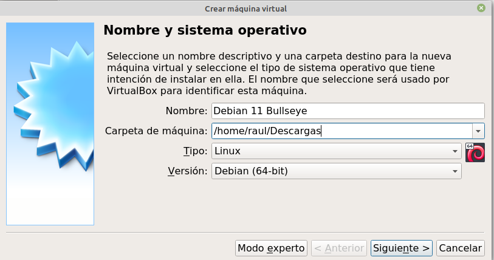
Monta como unidad de CD la ISO netinst que acabas de descargar:
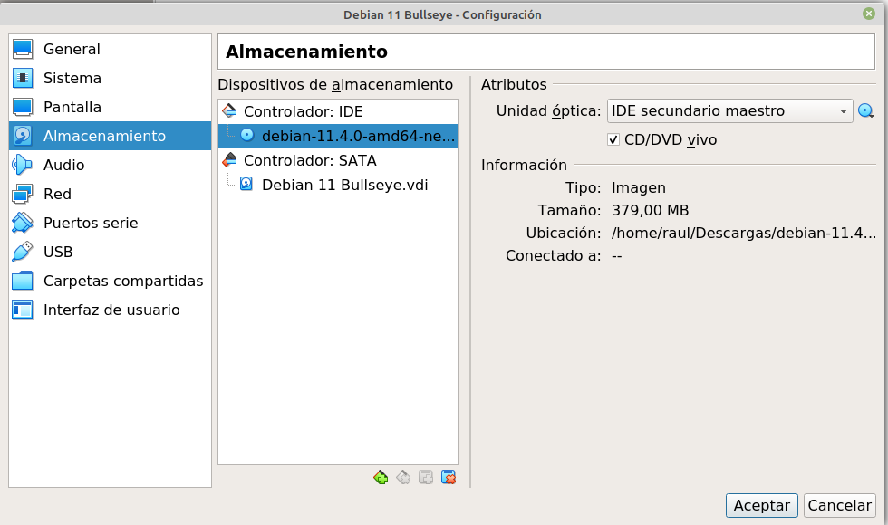
Desactiva la instalación desatendida
Si VirtualBox te ofrece la "instalación automática/desatendida" al detectar la ISO, desmárcala. Queremos instalar a mano para ver y entender cada decisión.
Recursos recomendados:
| Recurso | Mínimo | Recomendado |
|---|---|---|
| RAM | 1 GB | 2 GB |
| Procesadores | 1 | 2 |
| Disco | 10 GB | 20 GB |
Sin entorno gráfico la máquina funciona perfectamente con poco, pero a lo largo del módulo instalarás servidores web, Docker y bases de datos: no te quedes corto.
Configuración de red: adaptador puente¶
Este paso es el más importante de toda la práctica. En el único adaptador de red de la máquina virtual, selecciona el modo adaptador puente (bridged):
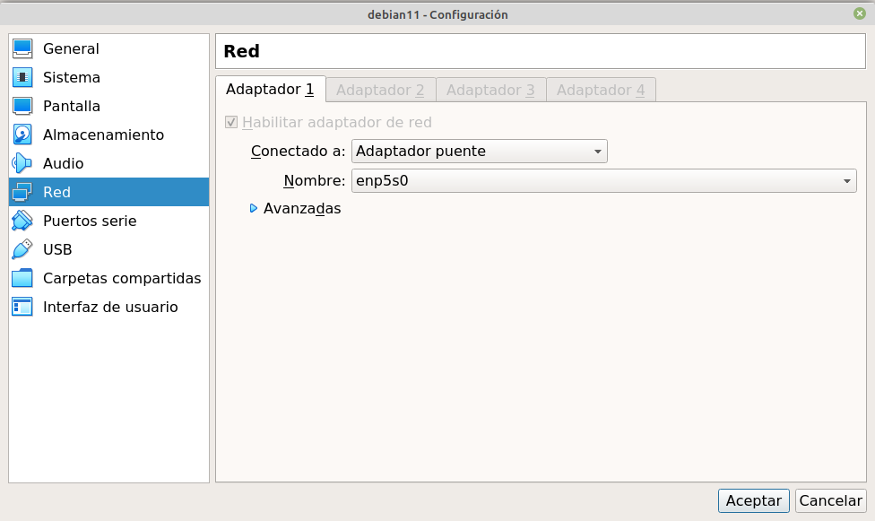
Con el adaptador puente, la máquina virtual obtiene una IP del mismo rango que tu red local (la de casa o la del instituto), como si fuera un ordenador más enchufado al router. Eso es justo lo que necesitamos: que sea accesible desde tu equipo igual que lo sería un servidor remoto.
Por qué no vale NAT
El modo NAT (el que VirtualBox pone por defecto) mete la máquina en una red privada propia. Desde ella podrás salir a Internet, pero tú no podrás entrar, que es exactamente lo contrario de lo que necesita un servidor. Si más adelante no puedes conectarte por SSH, lo primero que debes comprobar es esto.
3. Instalar Debian¶
Puedes instalar tanto en modo gráfico como en modo texto. Se recomienda el gráfico:
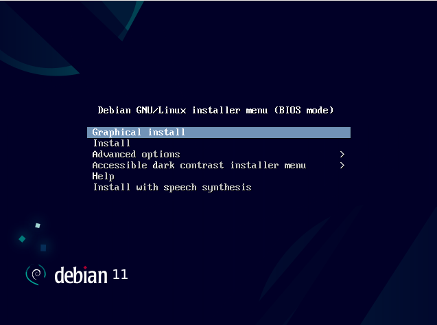
Los pasos que importan:
Nombre de la máquina (hostname). Aquí no eliges libremente: el nombre de tu máquina debe ser
en minúsculas, sin acentos, sin espacios y sin la ñ (por ejemplo, debian-garcia). Si tienes dos apellidos, usa solo el primero.
Esto no es un capricho
El hostname aparece en el prompt de cada comando que ejecutes (usuario@debian-tuapellido), así que firma automáticamente toda tu entrega. Una práctica entregada con el nombre de otra persona en el prompt es una práctica copiada, y se corrige sola.
Si te equivocas al instalar, se arregla después con sudo hostnamectl set-hostname debian-tuapellido y reiniciando.
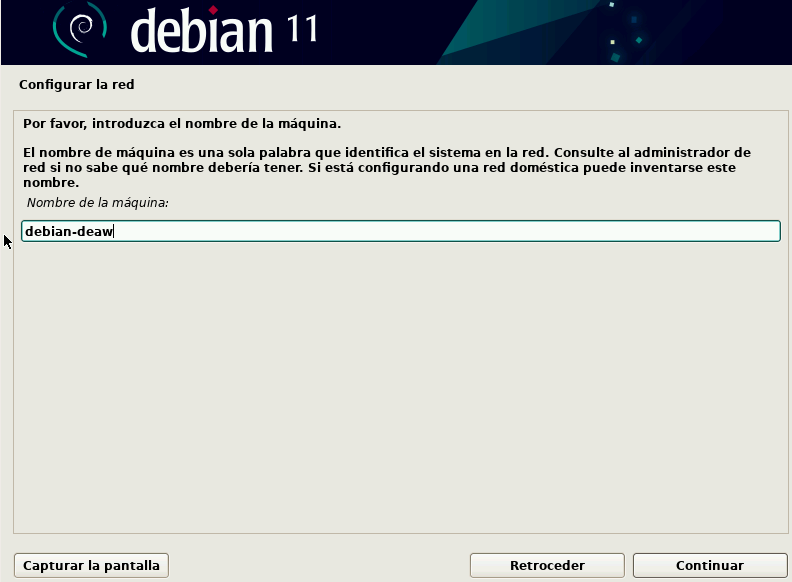
Contraseñas y usuario. Te pedirá una contraseña de superusuario (root), tu nombre de usuario y su contraseña:
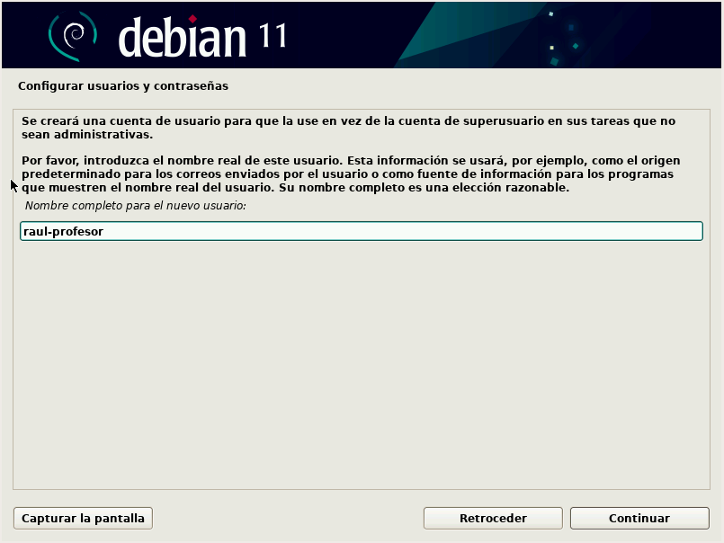
Truco: consigue sudo gratis
Si dejas vacía la contraseña de root, el instalador desactiva la cuenta de root y añade automáticamente tu usuario al grupo sudo. Es lo que hacen hoy la mayoría de distribuciones y te ahorra el paso 5 entero.
Aun así, haz el paso 5 igualmente: necesitas saber hacerlo a mano, porque en un servidor que no has instalado tú no tendrás esa opción.
Particionado. Para simplificar, dile que utilice todo el disco:
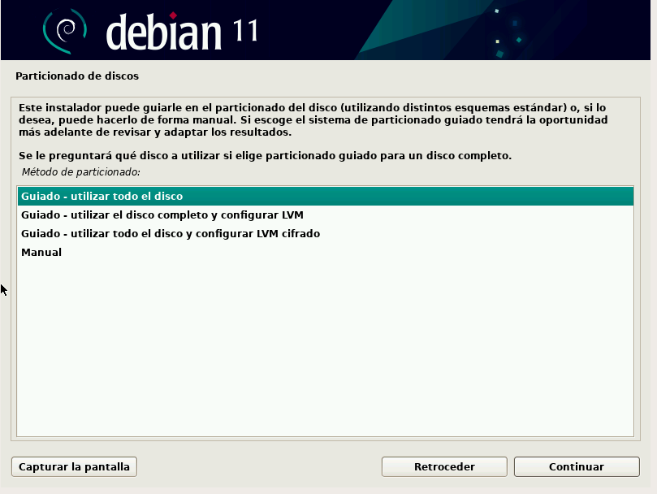
Selección de software (tasksel). Aquí está la otra decisión crítica. Deja marcado únicamente:
- Servidor SSH
- Utilidades estándar del sistema
Y desmarca el entorno de escritorio:
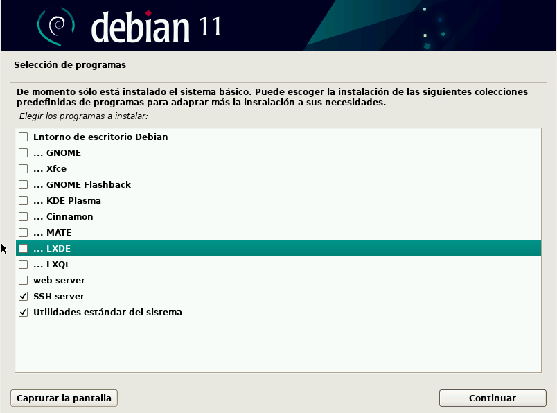
Sin entorno gráfico
Un servidor no lleva escritorio: consume memoria, aumenta la superficie de ataque y no lo va a mirar nadie. Si por alguna razón necesitas uno, LXDE es el que menos recursos consume:
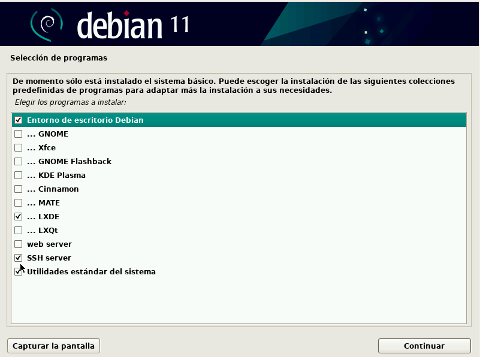
Gestor de arranque GRUB. Dile que sí lo instale, y selecciona el único disco que tienes (normalmente /dev/sda). Pincha en el nombre del disco, no en "entrar el dispositivo manualmente", o no se instalará:
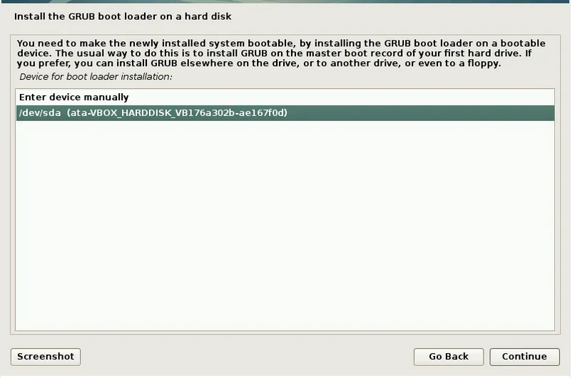
Al terminar pedirá reiniciar. Tras el reinicio aparecerá una terminal pidiendo login, y ahí ya puedes entrar con tu usuario y contraseña.
4. Averiguar la IP de la máquina¶
Desde la ventana de la máquina virtual, ejecuta:
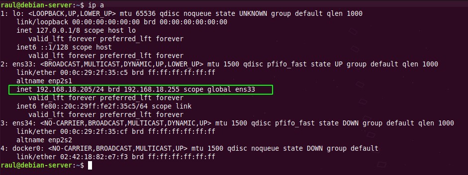
Busca la interfaz que no sea lo (el loopback) y anota su dirección inet. Debe estar dentro del rango de tu red local (algo como 192.168.1.x o 10.0.x.x). Como la máquina solo tiene una interfaz de red, no hay lugar a confusión.
Comprueba antes de seguir
Desde tu ordenador, haz ping a esa IP. Si no responde, revisa el adaptador puente antes de continuar.
5. Dar permisos de sudo a nuestro usuario¶
Tras la instalación tienes un usuario raso. A lo largo del módulo harás incontables tareas de administración, y cambiar a root cada vez es incómodo y peligroso.
Con sudo, cualquier comando precedido de esa palabra se ejecuta como root, y todo lo demás se ejecuta con tus permisos normales. Así te proteges de liarla con un comando que no tocaba.
Cambia al usuario root:
Y ejecuta visudo, la herramienta que edita el fichero de permisos de forma segura (comprueba la sintaxis antes de guardar, para que no te quedes fuera):
Deja la sección así, con tu propio nombre de usuario:
Guarda con Ctrl+X y confirma.
En ambos casos debes cerrar la sesión y volver a entrar para que el cambio surta efecto. Después, valida que funciona:
Si no tienes permisos, responderá:
Y si los tienes, no devolverá nada. Si quieres algo más explícito:
6. Primera conexión por SSH (con contraseña)¶
A partir de aquí, cierra la ventana de la máquina virtual y trabaja siempre desde tu terminal.
La primera vez te avisará de que no conoce la huella del servidor y te preguntará si confías en él. Escribe yes. A partir de entonces la huella queda guardada en tu fichero known_hosts.
¿Qué es esa huella?
Es el fingerprint de la clave pública del servidor. Sirve para detectar que alguien se esté haciendo pasar por tu servidor. Si algún día te aparece un aviso grande de que la huella ha cambiado sin que tú hayas reinstalado nada, no lo ignores.
7. Autenticación con par de claves¶
Ahora haremos lo que se hace en un servidor real: entrar sin contraseña, con un par de claves.
En tu ordenador (no en la máquina virtual), genera el par de claves:
Por qué ed25519 y no RSA
ed25519 es el algoritmo recomendado hoy: claves mucho más cortas, más rápidas y al menos igual de seguras que un RSA de 4096 bits. Verás mucha documentación antigua que usa ssh-keygen -b 4096; funciona, pero ya no es la primera opción.
Acepta la ubicación por defecto. Te pedirá una passphrase para proteger la clave privada: dado que queremos agilizar la conexión, déjala vacía pulsando Enter.
Se habrán creado dos archivos en tu carpeta .ssh:
| Archivo | Qué es | ¿Se comparte? |
|---|---|---|
id_ed25519 |
Clave privada | Nunca. No sale de tu equipo |
id_ed25519.pub |
Clave pública | Sí, es la que copiamos al servidor |
Ahora hay que copiar la clave pública al servidor:
Es una conexión SSH normal que, además, copia la clave en el sitio adecuado.
Para evitar problemas de permisos, ejecuta en la Debian:
Los permisos no son opcionales
SSH ignora el fichero authorized_keys si tiene permisos demasiado abiertos, y lo hace en silencio: te seguirá pidiendo la contraseña sin decirte por qué. Es el fallo número uno de esta práctica.
Cierra la sesión y vuelve a conectarte. Debe entrar sin pedirte contraseña.
8. Endurecer el servidor SSH¶
Si ya entras con clave, la contraseña sobra: es una puerta abierta que solo sirve para que la intenten forzar. Vamos a cerrarla.
Antes de tocar nada
Comprueba que la conexión con clave funciona. Si desactivas la contraseña sin tener la clave bien puesta, te quedas fuera de tu propio servidor (en la VM podrías entrar por la ventana; en un VPS real, no).
Edita el fichero de configuración del servidor:
Y deja estas tres directivas así:
Aplica los cambios:
Trampa de Debian 13
En Debian 13 el servidor SSH se activa por socket (ssh.socket). Eso significa que el clásico systemctl reload ssh falla con el error fatal: Cannot bind any address y puede tumbarte el servicio.
Usa siempre restart, no reload. Tranquilo: reiniciar el servicio no corta las sesiones SSH que ya estén abiertas.
Comprueba desde otra terminal (sin cerrar la que tienes abierta, por si acaso) que sigues entrando con la clave y que, si intentas forzar la contraseña, te rechaza:
Debe responder Permission denied (publickey).
9. Haz una instantánea¶
Con la máquina apagada, crea una instantánea (snapshot) en VirtualBox y llámala base-limpia.
A lo largo del módulo vas a instalar, configurar y romper muchas cosas. Poder volver a un punto conocido en treinta segundos, en vez de reinstalar Debian entera, te va a salvar más de una tarde.
Cuestiones finales¶
Cuestión 1
¿Qué diferencia hay entre el modo de red NAT y el adaptador puente? ¿Por qué el segundo es imprescindible en esta práctica?
Cuestión 2
¿Por qué visudo es preferible a editar /etc/sudoers directamente con nano?
Cuestión 3
Has copiado tu clave pública al servidor. ¿Qué ocurriría si, por error, hubieras copiado la privada? ¿Y qué debes hacer si eso pasa?
Cuestión 4
Tu máquina virtual ha cambiado de IP al reiniciar el router. ¿Por qué ocurre y qué se hace en un servidor real para que no pase?
Cuestión 5
Explica, con lo visto en la teoría, qué cifrado (simétrico o asimétrico) interviene en cada momento cuando te conectas por SSH con un par de claves.
Entrega¶
El resultado de esta práctica es una máquina virtual, y una máquina no se puede entregar. Lo que entregas son las pruebas de que esa máquina existe y está bien configurada.
La entrega tiene dos partes, y las dos son obligatorias.
Parte 1 — Documento de evidencias (40 %)¶
Un único PDF llamado P1.1-Apellido-Nombre.pdf que contenga, en este orden:
- Portada con tu nombre, el grupo y el hostname de tu máquina.
- Las evidencias de la tabla de abajo.
- Las respuestas a las cinco cuestiones finales, con tus palabras.
Texto, no capturas
La salida de los comandos se entrega copiada como texto, dentro de un bloque o con tipografía de ancho fijo. No valen fotos ni capturas de la terminal.
Solo hay dos excepciones, porque ahí sí hace falta ver la pantalla: la configuración del adaptador de red en VirtualBox y la instantánea creada.
Evidencias que debe contener el documento:
| # | Qué hay que demostrar | Comando cuya salida se pega |
|---|---|---|
| 1 | La máquina es tuya y el hostname es el correcto | hostnamectl |
| 2 | Tu usuario y sus grupos | id |
| 3 | El sistema arranca sin entorno gráfico | systemctl get-default (debe responder multi-user.target) |
| 4 | La red está en puente y tiene IP local | ip a |
| 5 | El servidor SSH está activo | systemctl status ssh |
| 6 | Tu usuario tiene permisos de administración | sudo id |
| 7 | Entras con par de claves | ssh -v usuario@IP — señala la línea Authenticated using "publickey" |
| 8 | El acceso por contraseña está cerrado | ssh -o PreferredAuthentications=password usuario@IP — debe responder Permission denied (publickey) |
| 9 | Configuración de red de la máquina | Captura de VirtualBox con el adaptador puente |
| 10 | Instantánea creada | Captura de la instantánea base-limpia |
Cada evidencia debe ir acompañada de una frase tuya explicando qué demuestra. Una tanda de comandos pegados sin explicar no puntúa.
Parte 2 — Demostración en clase (60 %)¶
En dos minutos, en tu puesto:
- Te conectas por SSH desde tu equipo a tu máquina virtual.
- Ejecutas el comando que se te pida en ese momento.
- Explicas en voz alta una de las decisiones que tomaste (por qué el adaptador puente, por qué sin escritorio, por qué desactivamos la contraseña…).
Esta parte no se puede preparar de memoria ni copiar: o la máquina funciona, o no funciona.
Cómo se califica
La demostración pesa más que el documento porque es lo que de verdad acredita el resultado de aprendizaje. Una demostración que no funciona no se compensa con un documento impecable: en ese caso la práctica queda pendiente hasta que la máquina funcione, y se vuelve a demostrar.
Criterios de evaluación¶
| Criterio | Peso |
|---|---|
| La máquina está instalada y configurada según lo pedido (sin escritorio, red en puente, recursos adecuados) | 25 % |
| El usuario tiene permisos de administración correctamente configurados | 15 % |
| La conexión por SSH funciona y está documentada | 15 % |
| La autenticación por par de claves funciona | 25 % |
| El servidor SSH está endurecido y se justifica cada directiva modificada | 10 % |
| Las cuestiones finales están respondidas con corrección y criterio propio | 10 % |
Antes de entregar, comprueba que…¶
- ☐ El hostname es
debian-tuapellidoy aparece en todas las salidas. - ☐ La máquina arranca sin entorno gráfico y muestra el login en terminal.
- ☐ Tiene una IP del rango de la red local.
- ☐ Tu usuario ejecuta
sudocorrectamente. - ☐ Te conectas por SSH sin que te pida contraseña.
- ☐ El acceso por contraseña y el de root están desactivados.
- ☐ Existe la instantánea
base-limpia. - ☐ Las diez evidencias están en el PDF, en texto y comentadas.
- ☐ Las cinco cuestiones están respondidas.
- ☐ El archivo se llama
P1.1-Apellido-Nombre.pdf.